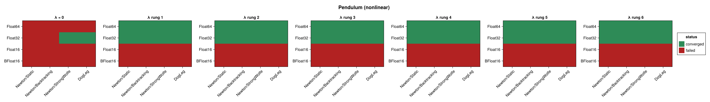
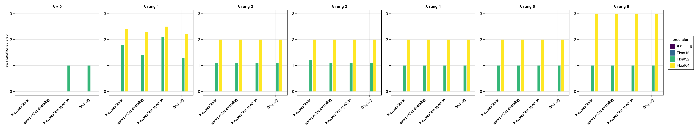
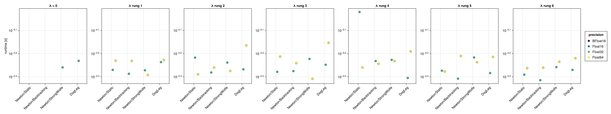
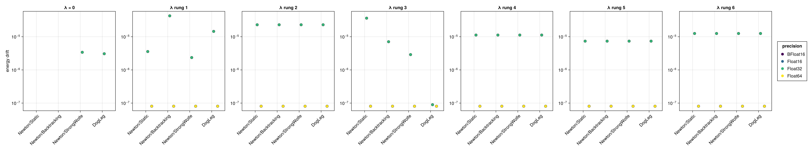
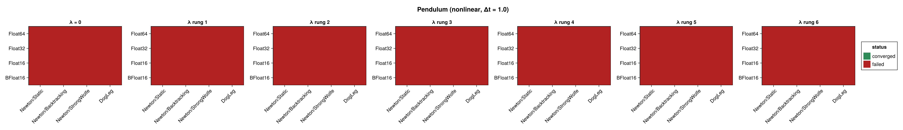
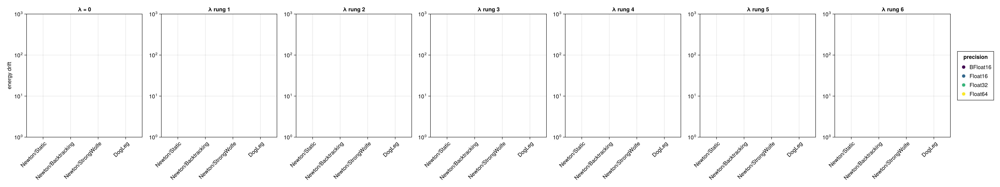

Pendulum (Nonlinear Integrator)
The mathematical pendulum benchmarked with the ShallowNet integrator (see Harmonic Oscillator (Nonlinear Integrator) for the network setup and the meaning of the regularization sweep). GeometricProblems.Pendulum provides no Lagrangian (lodeproblem) form, so its two-dimensional phase-space iodeproblem is used — the state is q = [angle, momentum], and the energy $H(\text{angle}, \text{momentum})$ is evaluated from both components. The pendulum is nonlinear, so it exercises the solves more than the harmonic oscillator. No closed-form solution is used; accuracy is assessed through the energy drift.
The figures panel by the regularization factor $\lambda$ — a rung of the $\sqrt{\varepsilon(T)}$ ladder, so one panel is a different shift at each precision; solver configurations are on the x-axis and precisions are distinguished by colour. Results are shown at $\Delta t = 0.1$ and repeated for $\Delta t = 1.0$ and $\Delta t = 10.0$ (ten steps each).
using SolverBenchmark
spec = pendulum_lode_spec(timespan = (0.0, 1.0), timestep = 0.1)
df = cached_sweep("nonlinear_pendulum_dt0.1") do
run_nonlinear_benchmark(spec; timing = :quick, max_iterations = 100,
verbose = false, quiet = true)
endConvergence
plot_convergence(df; panelcol = :regularization, title = "Pendulum (nonlinear)")
Nonlinear iterations
plot_iterations(df; panelcol = :regularization)
Run time
plot_runtime(df; panelcol = :regularization)
Energy drift
plot_energy_drift(df; panelcol = :regularization)
Discussion
- As for the harmonic oscillator, a nonzero regularization factor is required, and any rung will do. At
Float64, $\lambda = 0$ converges for no solver; every rung converges for all four, in $\approx 2.3$ iterations per step, conserving the energy to $8.05 \times 10^{-8}$ — to three significant figures the same drift at every rung, across a ladder spanning a factor of a thousand. - The pendulum's nonlinearity means the solve needs a few more iterations per step than the (linear) oscillator.
Float32converges from rung 2 up (23/28): all four solvers at rungs 2–6, but three of four at $\lambda = 0$ and none at rung 1. A rung that is worse than no regularization at all is the signature of the seed, not the solver — the OGA guess is rebuilt from the previous step's solution, so $\lambda$ perturbs the trajectory it is built from and can push a later step's Gram matrix into rank deficiency. See Harmonic Oscillator (Nonlinear Integrator) for that mechanism.- Both 16-bit formats fail at every rung (0/28 each, against 23/28 at
Float32and 24/28 atFloat64). The exception again comes from the OGA initial guess's Gram solve, not from the Newton Jacobian, soregularization_factorcannot reach it.
Results table
markdown_table(summary_table(df; panelcol = :regularization))| precision | solver_label | regularization | converged | iterations_mean | runtime_s | max_residual | at_tolerance | energy_drift |
|---|---|---|---|---|---|---|---|---|
| BFloat16 | Newton/Static | λ = 0 | ✗ | — | — | — | ✗ | — |
| BFloat16 | Newton/Static | λ rung 1 | ✗ | — | — | — | ✗ | — |
| BFloat16 | Newton/Static | λ rung 2 | ✗ | — | — | — | ✗ | — |
| BFloat16 | Newton/Static | λ rung 3 | ✗ | — | — | — | ✗ | — |
| BFloat16 | Newton/Static | λ rung 4 | ✗ | — | — | — | ✗ | — |
| BFloat16 | Newton/Static | λ rung 5 | ✗ | — | — | — | ✗ | — |
| BFloat16 | Newton/Static | λ rung 6 | ✗ | — | — | — | ✗ | — |
| BFloat16 | Newton/Backtracking | λ = 0 | ✗ | — | — | — | ✗ | — |
| BFloat16 | Newton/Backtracking | λ rung 1 | ✗ | — | — | — | ✗ | — |
| BFloat16 | Newton/Backtracking | λ rung 2 | ✗ | — | — | — | ✗ | — |
| BFloat16 | Newton/Backtracking | λ rung 3 | ✗ | — | — | — | ✗ | — |
| BFloat16 | Newton/Backtracking | λ rung 4 | ✗ | — | — | — | ✗ | — |
| BFloat16 | Newton/Backtracking | λ rung 5 | ✗ | — | — | — | ✗ | — |
| BFloat16 | Newton/Backtracking | λ rung 6 | ✗ | — | — | — | ✗ | — |
| BFloat16 | Newton/StrongWolfe | λ = 0 | ✗ | — | — | — | ✗ | — |
| BFloat16 | Newton/StrongWolfe | λ rung 1 | ✗ | — | — | — | ✗ | — |
| BFloat16 | Newton/StrongWolfe | λ rung 2 | ✗ | — | — | — | ✗ | — |
| BFloat16 | Newton/StrongWolfe | λ rung 3 | ✗ | — | — | — | ✗ | — |
| BFloat16 | Newton/StrongWolfe | λ rung 4 | ✗ | — | — | — | ✗ | — |
| BFloat16 | Newton/StrongWolfe | λ rung 5 | ✗ | — | — | — | ✗ | — |
| BFloat16 | Newton/StrongWolfe | λ rung 6 | ✗ | — | — | — | ✗ | — |
| BFloat16 | DogLeg | λ = 0 | ✗ | — | — | — | ✗ | — |
| BFloat16 | DogLeg | λ rung 1 | ✗ | — | — | — | ✗ | — |
| BFloat16 | DogLeg | λ rung 2 | ✗ | — | — | — | ✗ | — |
| BFloat16 | DogLeg | λ rung 3 | ✗ | — | — | — | ✗ | — |
| BFloat16 | DogLeg | λ rung 4 | ✗ | — | — | — | ✗ | — |
| BFloat16 | DogLeg | λ rung 5 | ✗ | — | — | — | ✗ | — |
| BFloat16 | DogLeg | λ rung 6 | ✗ | — | — | — | ✗ | — |
| Float16 | Newton/Static | λ = 0 | ✗ | — | — | — | ✗ | — |
| Float16 | Newton/Static | λ rung 1 | ✗ | — | — | — | ✗ | — |
| Float16 | Newton/Static | λ rung 2 | ✗ | — | — | — | ✗ | — |
| Float16 | Newton/Static | λ rung 3 | ✗ | — | — | — | ✗ | — |
| Float16 | Newton/Static | λ rung 4 | ✗ | — | — | — | ✗ | — |
| Float16 | Newton/Static | λ rung 5 | ✗ | — | — | — | ✗ | — |
| Float16 | Newton/Static | λ rung 6 | ✗ | — | — | — | ✗ | — |
| Float16 | Newton/Backtracking | λ = 0 | ✗ | — | — | — | ✗ | — |
| Float16 | Newton/Backtracking | λ rung 1 | ✗ | — | — | — | ✗ | — |
| Float16 | Newton/Backtracking | λ rung 2 | ✗ | — | — | — | ✗ | — |
| Float16 | Newton/Backtracking | λ rung 3 | ✗ | — | — | — | ✗ | — |
| Float16 | Newton/Backtracking | λ rung 4 | ✗ | — | — | — | ✗ | — |
| Float16 | Newton/Backtracking | λ rung 5 | ✗ | — | — | — | ✗ | — |
| Float16 | Newton/Backtracking | λ rung 6 | ✗ | — | — | — | ✗ | — |
| Float16 | Newton/StrongWolfe | λ = 0 | ✗ | — | — | — | ✗ | — |
| Float16 | Newton/StrongWolfe | λ rung 1 | ✗ | — | — | — | ✗ | — |
| Float16 | Newton/StrongWolfe | λ rung 2 | ✗ | — | — | — | ✗ | — |
| Float16 | Newton/StrongWolfe | λ rung 3 | ✗ | — | — | — | ✗ | — |
| Float16 | Newton/StrongWolfe | λ rung 4 | ✗ | — | — | — | ✗ | — |
| Float16 | Newton/StrongWolfe | λ rung 5 | ✗ | — | — | — | ✗ | — |
| Float16 | Newton/StrongWolfe | λ rung 6 | ✗ | — | — | — | ✗ | — |
| Float16 | DogLeg | λ = 0 | ✗ | — | — | — | ✗ | — |
| Float16 | DogLeg | λ rung 1 | ✗ | — | — | — | ✗ | — |
| Float16 | DogLeg | λ rung 2 | ✗ | — | — | — | ✗ | — |
| Float16 | DogLeg | λ rung 3 | ✗ | — | — | — | ✗ | — |
| Float16 | DogLeg | λ rung 4 | ✗ | — | — | — | ✗ | — |
| Float16 | DogLeg | λ rung 5 | ✗ | — | — | — | ✗ | — |
| Float16 | DogLeg | λ rung 6 | ✗ | — | — | — | ✗ | — |
| Float32 | Newton/Static | λ = 0 | ✗ | — | — | — | ✗ | — |
| Float32 | Newton/Static | λ rung 1 | ✓ | 1.8 | 0.537 | 2.09e-05 | ✓ | 3.58e-06 |
| Float32 | Newton/Static | λ rung 2 | ✓ | 1.1 | 0.606 | 2.39e-05 | ✓ | 2.29e-05 |
| Float32 | Newton/Static | λ rung 3 | ✓ | 1.2 | 0.526 | 2.42e-05 | ✓ | 3.62e-05 |
| Float32 | Newton/Static | λ rung 4 | ✓ | 1 | 0.954 | 2.49e-05 | ✓ | 1.12e-05 |
| Float32 | Newton/Static | λ rung 5 | ✓ | 1 | 0.533 | 2.46e-05 | ✓ | 7.36e-06 |
| Float32 | Newton/Static | λ rung 6 | ✓ | 1 | 0.512 | 2.88e-05 | ✓ | 1.25e-05 |
| Float32 | Newton/Backtracking | λ = 0 | ✗ | 2.6 | 0.606 | 8.42e-05 | ✗ | — |
| Float32 | Newton/Backtracking | λ rung 1 | ✓ | 1.4 | 0.516 | 2.67e-05 | ✓ | 4.26e-05 |
| Float32 | Newton/Backtracking | λ rung 2 | ✓ | 1.1 | 0.523 | 2.39e-05 | ✓ | 2.29e-05 |
| Float32 | Newton/Backtracking | λ rung 3 | ✓ | 1.1 | 0.53 | 2.81e-05 | ✓ | 7.06e-06 |
| Float32 | Newton/Backtracking | λ rung 4 | ✓ | 1 | 0.586 | 2.49e-05 | ✓ | 1.12e-05 |
| Float32 | Newton/Backtracking | λ rung 5 | ✓ | 1 | 0.492 | 2.46e-05 | ✓ | 7.36e-06 |
| Float32 | Newton/Backtracking | λ rung 6 | ✓ | 1 | 0.485 | 2.88e-05 | ✓ | 1.25e-05 |
| Float32 | Newton/StrongWolfe | λ = 0 | ✓ | 1 | 0.55 | 2.28e-05 | ✓ | 3.4e-06 |
| Float32 | Newton/StrongWolfe | λ rung 1 | ✓ | 2.1 | 0.535 | 2.31e-05 | ✓ | 2.35e-06 |
| Float32 | Newton/StrongWolfe | λ rung 2 | ✓ | 1.1 | 0.577 | 2.39e-05 | ✓ | 2.29e-05 |
| Float32 | Newton/StrongWolfe | λ rung 3 | ✓ | 1.1 | 0.599 | 1.96e-05 | ✓ | 2.89e-06 |
| Float32 | Newton/StrongWolfe | λ rung 4 | ✓ | 1 | 0.593 | 2.49e-05 | ✓ | 1.12e-05 |
| Float32 | Newton/StrongWolfe | λ rung 5 | ✓ | 1 | 0.607 | 2.46e-05 | ✓ | 7.36e-06 |
| Float32 | Newton/StrongWolfe | λ rung 6 | ✓ | 1 | 0.552 | 2.88e-05 | ✓ | 1.25e-05 |
| Float32 | DogLeg | λ = 0 | ✓ | 1 | 0.587 | 2.71e-05 | ✓ | 3.07e-06 |
| Float32 | DogLeg | λ rung 1 | ✓ | 1.3 | 0.58 | 2.1e-05 | ✓ | 1.45e-05 |
| Float32 | DogLeg | λ rung 2 | ✓ | 1.1 | 0.54 | 2.39e-05 | ✓ | 2.29e-05 |
| Float32 | DogLeg | λ rung 3 | ✓ | 1.1 | 0.565 | 1.96e-05 | ✓ | 8.94e-08 |
| Float32 | DogLeg | λ rung 4 | ✓ | 1 | 0.496 | 2.49e-05 | ✓ | 1.12e-05 |
| Float32 | DogLeg | λ rung 5 | ✓ | 1 | 0.52 | 2.46e-05 | ✓ | 7.36e-06 |
| Float32 | DogLeg | λ rung 6 | ✓ | 1 | 0.537 | 2.88e-05 | ✓ | 1.25e-05 |
| Float64 | Newton/Static | λ = 0 | ✗ | — | — | — | ✗ | — |
| Float64 | Newton/Static | λ rung 1 | ✓ | 2.4 | 0.588 | 3.95e-14 | ✓ | 8.05e-08 |
| Float64 | Newton/Static | λ rung 2 | ✓ | 2 | 0.514 | 3.73e-14 | ✓ | 8.05e-08 |
| Float64 | Newton/Static | λ rung 3 | ✓ | 2 | 0.612 | 3.14e-14 | ✓ | 8.05e-08 |
| Float64 | Newton/Static | λ rung 4 | ✓ | 2 | 0.55 | 3.62e-14 | ✓ | 8.05e-08 |
| Float64 | Newton/Static | λ rung 5 | ✓ | 2 | 0.528 | 3.77e-14 | ✓ | 8.05e-08 |
| Float64 | Newton/Static | λ rung 6 | ✓ | 3 | 0.546 | 3.64e-14 | ✓ | 8.05e-08 |
| Float64 | Newton/Backtracking | λ = 0 | ✗ | 57.5 | 0.905 | 3.01e-10 | ✗ | — |
| Float64 | Newton/Backtracking | λ rung 1 | ✓ | 2.3 | 0.587 | 3.7e-14 | ✓ | 8.05e-08 |
| Float64 | Newton/Backtracking | λ rung 2 | ✓ | 2 | 0.55 | 3.73e-14 | ✓ | 8.05e-08 |
| Float64 | Newton/Backtracking | λ rung 3 | ✓ | 2 | 0.574 | 3.14e-14 | ✓ | 8.05e-08 |
| Float64 | Newton/Backtracking | λ rung 4 | ✓ | 2 | 0.57 | 3.62e-14 | ✓ | 8.05e-08 |
| Float64 | Newton/Backtracking | λ rung 5 | ✓ | 2 | 0.616 | 3.77e-14 | ✓ | 8.05e-08 |
| Float64 | Newton/Backtracking | λ rung 6 | ✓ | 3 | 0.549 | 3.64e-14 | ✓ | 8.05e-08 |
| Float64 | Newton/StrongWolfe | λ = 0 | ✗ | 45.6 | 0.893 | 0.48 | ✗ | — |
| Float64 | Newton/StrongWolfe | λ rung 1 | ✓ | 2.5 | 0.51 | 4.14e-14 | ✓ | 8.05e-08 |
| Float64 | Newton/StrongWolfe | λ rung 2 | ✓ | 2 | 0.531 | 3.73e-14 | ✓ | 8.05e-08 |
| Float64 | Newton/StrongWolfe | λ rung 3 | ✓ | 2 | 0.491 | 3.14e-14 | ✓ | 8.05e-08 |
| Float64 | Newton/StrongWolfe | λ rung 4 | ✓ | 2 | 0.586 | 3.62e-14 | ✓ | 8.05e-08 |
| Float64 | Newton/StrongWolfe | λ rung 5 | ✓ | 2 | 0.579 | 3.77e-14 | ✓ | 8.05e-08 |
| Float64 | Newton/StrongWolfe | λ rung 6 | ✓ | 3 | 0.582 | 3.64e-14 | ✓ | 8.05e-08 |
| Float64 | DogLeg | λ = 0 | ✗ | 19.6 | 0.737 | 2.62e-10 | ✗ | — |
| Float64 | DogLeg | λ rung 1 | ✓ | 2.2 | 0.592 | 4.05e-14 | ✓ | 8.05e-08 |
| Float64 | DogLeg | λ rung 2 | ✓ | 2 | 0.684 | 3.73e-14 | ✓ | 8.05e-08 |
| Float64 | DogLeg | λ rung 3 | ✓ | 2 | 0.703 | 3.14e-14 | ✓ | 8.05e-08 |
| Float64 | DogLeg | λ rung 4 | ✓ | 2 | 0.645 | 3.62e-14 | ✓ | 8.05e-08 |
| Float64 | DogLeg | λ rung 5 | ✓ | 2 | 0.61 | 3.77e-14 | ✓ | 8.05e-08 |
| Float64 | DogLeg | λ rung 6 | ✓ | 3 | 0.603 | 3.64e-14 | ✓ | 8.05e-08 |
Coarse time step (Δt = 1.0)
spec1 = pendulum_lode_spec(timespan = (0.0, 10.0), timestep = 1.0)
df1 = cached_sweep("nonlinear_pendulum_dt1.0") do
run_nonlinear_benchmark(spec1; timing = :quick, max_iterations = 100,
verbose = false, quiet = true)
endplot_convergence(df1; panelcol = :regularization, title = "Pendulum (nonlinear, Δt = 1.0)")
plot_energy_drift(df1; panelcol = :regularization)
markdown_table(summary_table(df1; panelcol = :regularization))| precision | solver_label | regularization | converged | iterations_mean | runtime_s | max_residual |
|---|---|---|---|---|---|---|
| BFloat16 | Newton/Static | λ = 0 | ✗ | — | — | — |
| BFloat16 | Newton/Static | λ rung 1 | ✗ | — | — | — |
| BFloat16 | Newton/Static | λ rung 2 | ✗ | — | — | — |
| BFloat16 | Newton/Static | λ rung 3 | ✗ | — | — | — |
| BFloat16 | Newton/Static | λ rung 4 | ✗ | — | — | — |
| BFloat16 | Newton/Static | λ rung 5 | ✗ | — | — | — |
| BFloat16 | Newton/Static | λ rung 6 | ✗ | — | — | — |
| BFloat16 | Newton/Backtracking | λ = 0 | ✗ | — | — | — |
| BFloat16 | Newton/Backtracking | λ rung 1 | ✗ | — | — | — |
| BFloat16 | Newton/Backtracking | λ rung 2 | ✗ | — | — | — |
| BFloat16 | Newton/Backtracking | λ rung 3 | ✗ | — | — | — |
| BFloat16 | Newton/Backtracking | λ rung 4 | ✗ | — | — | — |
| BFloat16 | Newton/Backtracking | λ rung 5 | ✗ | — | — | — |
| BFloat16 | Newton/Backtracking | λ rung 6 | ✗ | — | — | — |
| BFloat16 | Newton/StrongWolfe | λ = 0 | ✗ | — | — | — |
| BFloat16 | Newton/StrongWolfe | λ rung 1 | ✗ | — | — | — |
| BFloat16 | Newton/StrongWolfe | λ rung 2 | ✗ | — | — | — |
| BFloat16 | Newton/StrongWolfe | λ rung 3 | ✗ | — | — | — |
| BFloat16 | Newton/StrongWolfe | λ rung 4 | ✗ | — | — | — |
| BFloat16 | Newton/StrongWolfe | λ rung 5 | ✗ | — | — | — |
| BFloat16 | Newton/StrongWolfe | λ rung 6 | ✗ | — | — | — |
| BFloat16 | DogLeg | λ = 0 | ✗ | — | — | — |
| BFloat16 | DogLeg | λ rung 1 | ✗ | — | — | — |
| BFloat16 | DogLeg | λ rung 2 | ✗ | — | — | — |
| BFloat16 | DogLeg | λ rung 3 | ✗ | — | — | — |
| BFloat16 | DogLeg | λ rung 4 | ✗ | — | — | — |
| BFloat16 | DogLeg | λ rung 5 | ✗ | — | — | — |
| BFloat16 | DogLeg | λ rung 6 | ✗ | — | — | — |
| Float16 | Newton/Static | λ = 0 | ✗ | — | — | — |
| Float16 | Newton/Static | λ rung 1 | ✗ | — | — | — |
| Float16 | Newton/Static | λ rung 2 | ✗ | — | — | — |
| Float16 | Newton/Static | λ rung 3 | ✗ | — | — | — |
| Float16 | Newton/Static | λ rung 4 | ✗ | — | — | — |
| Float16 | Newton/Static | λ rung 5 | ✗ | — | — | — |
| Float16 | Newton/Static | λ rung 6 | ✗ | — | — | — |
| Float16 | Newton/Backtracking | λ = 0 | ✗ | — | — | — |
| Float16 | Newton/Backtracking | λ rung 1 | ✗ | — | — | — |
| Float16 | Newton/Backtracking | λ rung 2 | ✗ | — | — | — |
| Float16 | Newton/Backtracking | λ rung 3 | ✗ | — | — | — |
| Float16 | Newton/Backtracking | λ rung 4 | ✗ | — | — | — |
| Float16 | Newton/Backtracking | λ rung 5 | ✗ | — | — | — |
| Float16 | Newton/Backtracking | λ rung 6 | ✗ | — | — | — |
| Float16 | Newton/StrongWolfe | λ = 0 | ✗ | — | — | — |
| Float16 | Newton/StrongWolfe | λ rung 1 | ✗ | — | — | — |
| Float16 | Newton/StrongWolfe | λ rung 2 | ✗ | — | — | — |
| Float16 | Newton/StrongWolfe | λ rung 3 | ✗ | — | — | — |
| Float16 | Newton/StrongWolfe | λ rung 4 | ✗ | — | — | — |
| Float16 | Newton/StrongWolfe | λ rung 5 | ✗ | — | — | — |
| Float16 | Newton/StrongWolfe | λ rung 6 | ✗ | — | — | — |
| Float16 | DogLeg | λ = 0 | ✗ | — | — | — |
| Float16 | DogLeg | λ rung 1 | ✗ | — | — | — |
| Float16 | DogLeg | λ rung 2 | ✗ | — | — | — |
| Float16 | DogLeg | λ rung 3 | ✗ | — | — | — |
| Float16 | DogLeg | λ rung 4 | ✗ | — | — | — |
| Float16 | DogLeg | λ rung 5 | ✗ | — | — | — |
| Float16 | DogLeg | λ rung 6 | ✗ | — | — | — |
| Float32 | Newton/Static | λ = 0 | ✗ | — | — | — |
| Float32 | Newton/Static | λ rung 1 | ✗ | — | — | — |
| Float32 | Newton/Static | λ rung 2 | ✗ | — | — | — |
| Float32 | Newton/Static | λ rung 3 | ✗ | — | — | — |
| Float32 | Newton/Static | λ rung 4 | ✗ | — | — | — |
| Float32 | Newton/Static | λ rung 5 | ✗ | — | — | — |
| Float32 | Newton/Static | λ rung 6 | ✗ | — | — | — |
| Float32 | Newton/Backtracking | λ = 0 | ✗ | — | — | — |
| Float32 | Newton/Backtracking | λ rung 1 | ✗ | — | — | — |
| Float32 | Newton/Backtracking | λ rung 2 | ✗ | — | — | — |
| Float32 | Newton/Backtracking | λ rung 3 | ✗ | — | — | — |
| Float32 | Newton/Backtracking | λ rung 4 | ✗ | — | — | — |
| Float32 | Newton/Backtracking | λ rung 5 | ✗ | — | — | — |
| Float32 | Newton/Backtracking | λ rung 6 | ✗ | — | — | — |
| Float32 | Newton/StrongWolfe | λ = 0 | ✗ | — | — | — |
| Float32 | Newton/StrongWolfe | λ rung 1 | ✗ | — | — | — |
| Float32 | Newton/StrongWolfe | λ rung 2 | ✗ | — | — | — |
| Float32 | Newton/StrongWolfe | λ rung 3 | ✗ | — | — | — |
| Float32 | Newton/StrongWolfe | λ rung 4 | ✗ | — | — | — |
| Float32 | Newton/StrongWolfe | λ rung 5 | ✗ | — | — | — |
| Float32 | Newton/StrongWolfe | λ rung 6 | ✗ | — | — | — |
| Float32 | DogLeg | λ = 0 | ✗ | — | — | — |
| Float32 | DogLeg | λ rung 1 | ✗ | — | — | — |
| Float32 | DogLeg | λ rung 2 | ✗ | — | — | — |
| Float32 | DogLeg | λ rung 3 | ✗ | — | — | — |
| Float32 | DogLeg | λ rung 4 | ✗ | — | — | — |
| Float32 | DogLeg | λ rung 5 | ✗ | — | — | — |
| Float32 | DogLeg | λ rung 6 | ✗ | — | — | — |
| Float64 | Newton/Static | λ = 0 | ✗ | — | — | — |
| Float64 | Newton/Static | λ rung 1 | ✗ | — | — | — |
| Float64 | Newton/Static | λ rung 2 | ✗ | — | — | — |
| Float64 | Newton/Static | λ rung 3 | ✗ | — | — | — |
| Float64 | Newton/Static | λ rung 4 | ✗ | 1.9 | 0.959 | Inf |
| Float64 | Newton/Static | λ rung 5 | ✗ | 19.9 | 0.779 | Inf |
| Float64 | Newton/Static | λ rung 6 | ✗ | 6.9 | 0.651 | Inf |
| Float64 | Newton/Backtracking | λ = 0 | ✗ | 61.3 | 0.945 | 0.443 |
| Float64 | Newton/Backtracking | λ rung 1 | ✗ | 44.1 | 0.917 | 0.0835 |
| Float64 | Newton/Backtracking | λ rung 2 | ✗ | 33.4 | 0.858 | 0.123 |
| Float64 | Newton/Backtracking | λ rung 3 | ✗ | 43.6 | 1 | 0.196 |
| Float64 | Newton/Backtracking | λ rung 4 | ✗ | 41.4 | 0.863 | 0.262 |
| Float64 | Newton/Backtracking | λ rung 5 | ✗ | 60.4 | 0.942 | 0.0567 |
| Float64 | Newton/Backtracking | λ rung 6 | ✗ | 43.5 | 0.824 | 0.58 |
| Float64 | Newton/StrongWolfe | λ = 0 | ✗ | — | — | — |
| Float64 | Newton/StrongWolfe | λ rung 1 | ✗ | 23.2 | 0.995 | 3.48e+146 |
| Float64 | Newton/StrongWolfe | λ rung 2 | ✗ | 56.8 | 1.12 | 6.68e+26 |
| Float64 | Newton/StrongWolfe | λ rung 3 | ✗ | 34.9 | 1 | 0.0909 |
| Float64 | Newton/StrongWolfe | λ rung 4 | ✗ | — | — | — |
| Float64 | Newton/StrongWolfe | λ rung 5 | ✗ | 39.5 | 1.04 | 1.18e+66 |
| Float64 | Newton/StrongWolfe | λ rung 6 | ✗ | — | — | — |
| Float64 | DogLeg | λ = 0 | ✗ | 69.1 | 0.925 | 0.0403 |
| Float64 | DogLeg | λ rung 1 | ✗ | 58.4 | 0.802 | 0.0906 |
| Float64 | DogLeg | λ rung 2 | ✗ | 43.9 | 0.696 | 0.00791 |
| Float64 | DogLeg | λ rung 3 | ✗ | 35.4 | 0.761 | 0.0288 |
| Float64 | DogLeg | λ rung 4 | ✗ | 37.7 | 0.723 | 0.0282 |
| Float64 | DogLeg | λ rung 5 | ✗ | 48.9 | 0.71 | 0.0966 |
| Float64 | DogLeg | λ rung 6 | ✗ | 54.8 | 0.764 | 0.0342 |
Large time step (Δt = 10.0)
spec10 = pendulum_lode_spec(timespan = (0.0, 100.0), timestep = 10.0)
df10 = cached_sweep("nonlinear_pendulum_dt10.0") do
run_nonlinear_benchmark(spec10; timing = :quick, max_iterations = 100,
verbose = false, quiet = true)
endplot_convergence(df10; panelcol = :regularization, title = "Pendulum (nonlinear, Δt = 10.0)")markdown_table(summary_table(df10; panelcol = :regularization))| precision | solver_label | regularization | converged | iterations_mean | runtime_s | max_residual |
|---|---|---|---|---|---|---|
| BFloat16 | Newton/Static | λ = 0 | ✗ | — | — | — |
| BFloat16 | Newton/Static | λ rung 1 | ✗ | — | — | — |
| BFloat16 | Newton/Static | λ rung 2 | ✗ | — | — | — |
| BFloat16 | Newton/Static | λ rung 3 | ✗ | — | — | — |
| BFloat16 | Newton/Static | λ rung 4 | ✗ | — | — | — |
| BFloat16 | Newton/Static | λ rung 5 | ✗ | — | — | — |
| BFloat16 | Newton/Static | λ rung 6 | ✗ | — | — | — |
| BFloat16 | Newton/Backtracking | λ = 0 | ✗ | — | — | — |
| BFloat16 | Newton/Backtracking | λ rung 1 | ✗ | — | — | — |
| BFloat16 | Newton/Backtracking | λ rung 2 | ✗ | — | — | — |
| BFloat16 | Newton/Backtracking | λ rung 3 | ✗ | — | — | — |
| BFloat16 | Newton/Backtracking | λ rung 4 | ✗ | — | — | — |
| BFloat16 | Newton/Backtracking | λ rung 5 | ✗ | — | — | — |
| BFloat16 | Newton/Backtracking | λ rung 6 | ✗ | — | — | — |
| BFloat16 | Newton/StrongWolfe | λ = 0 | ✗ | — | — | — |
| BFloat16 | Newton/StrongWolfe | λ rung 1 | ✗ | — | — | — |
| BFloat16 | Newton/StrongWolfe | λ rung 2 | ✗ | — | — | — |
| BFloat16 | Newton/StrongWolfe | λ rung 3 | ✗ | — | — | — |
| BFloat16 | Newton/StrongWolfe | λ rung 4 | ✗ | — | — | — |
| BFloat16 | Newton/StrongWolfe | λ rung 5 | ✗ | — | — | — |
| BFloat16 | Newton/StrongWolfe | λ rung 6 | ✗ | — | — | — |
| BFloat16 | DogLeg | λ = 0 | ✗ | — | — | — |
| BFloat16 | DogLeg | λ rung 1 | ✗ | — | — | — |
| BFloat16 | DogLeg | λ rung 2 | ✗ | — | — | — |
| BFloat16 | DogLeg | λ rung 3 | ✗ | — | — | — |
| BFloat16 | DogLeg | λ rung 4 | ✗ | — | — | — |
| BFloat16 | DogLeg | λ rung 5 | ✗ | — | — | — |
| BFloat16 | DogLeg | λ rung 6 | ✗ | — | — | — |
| Float16 | Newton/Static | λ = 0 | ✗ | — | — | — |
| Float16 | Newton/Static | λ rung 1 | ✗ | — | — | — |
| Float16 | Newton/Static | λ rung 2 | ✗ | — | — | — |
| Float16 | Newton/Static | λ rung 3 | ✗ | — | — | — |
| Float16 | Newton/Static | λ rung 4 | ✗ | — | — | — |
| Float16 | Newton/Static | λ rung 5 | ✗ | — | — | — |
| Float16 | Newton/Static | λ rung 6 | ✗ | — | — | — |
| Float16 | Newton/Backtracking | λ = 0 | ✗ | — | — | — |
| Float16 | Newton/Backtracking | λ rung 1 | ✗ | — | — | — |
| Float16 | Newton/Backtracking | λ rung 2 | ✗ | — | — | — |
| Float16 | Newton/Backtracking | λ rung 3 | ✗ | — | — | — |
| Float16 | Newton/Backtracking | λ rung 4 | ✗ | — | — | — |
| Float16 | Newton/Backtracking | λ rung 5 | ✗ | — | — | — |
| Float16 | Newton/Backtracking | λ rung 6 | ✗ | — | — | — |
| Float16 | Newton/StrongWolfe | λ = 0 | ✗ | — | — | — |
| Float16 | Newton/StrongWolfe | λ rung 1 | ✗ | — | — | — |
| Float16 | Newton/StrongWolfe | λ rung 2 | ✗ | — | — | — |
| Float16 | Newton/StrongWolfe | λ rung 3 | ✗ | — | — | — |
| Float16 | Newton/StrongWolfe | λ rung 4 | ✗ | — | — | — |
| Float16 | Newton/StrongWolfe | λ rung 5 | ✗ | — | — | — |
| Float16 | Newton/StrongWolfe | λ rung 6 | ✗ | — | — | — |
| Float16 | DogLeg | λ = 0 | ✗ | — | — | — |
| Float16 | DogLeg | λ rung 1 | ✗ | — | — | — |
| Float16 | DogLeg | λ rung 2 | ✗ | — | — | — |
| Float16 | DogLeg | λ rung 3 | ✗ | — | — | — |
| Float16 | DogLeg | λ rung 4 | ✗ | — | — | — |
| Float16 | DogLeg | λ rung 5 | ✗ | — | — | — |
| Float16 | DogLeg | λ rung 6 | ✗ | — | — | — |
| Float32 | Newton/Static | λ = 0 | ✗ | — | — | — |
| Float32 | Newton/Static | λ rung 1 | ✗ | — | — | — |
| Float32 | Newton/Static | λ rung 2 | ✗ | — | — | — |
| Float32 | Newton/Static | λ rung 3 | ✗ | — | — | — |
| Float32 | Newton/Static | λ rung 4 | ✗ | — | — | — |
| Float32 | Newton/Static | λ rung 5 | ✗ | — | — | — |
| Float32 | Newton/Static | λ rung 6 | ✗ | — | — | — |
| Float32 | Newton/Backtracking | λ = 0 | ✗ | — | — | — |
| Float32 | Newton/Backtracking | λ rung 1 | ✗ | — | — | — |
| Float32 | Newton/Backtracking | λ rung 2 | ✗ | — | — | — |
| Float32 | Newton/Backtracking | λ rung 3 | ✗ | 66.3 | 0.712 | 3.86e+05 |
| Float32 | Newton/Backtracking | λ rung 4 | ✗ | 63.7 | 0.745 | 1.64e+04 |
| Float32 | Newton/Backtracking | λ rung 5 | ✗ | 63 | 0.705 | 2.58e+14 |
| Float32 | Newton/Backtracking | λ rung 6 | ✗ | 65.1 | 0.686 | 5.92e+03 |
| Float32 | Newton/StrongWolfe | λ = 0 | ✗ | — | — | — |
| Float32 | Newton/StrongWolfe | λ rung 1 | ✗ | 19.5 | 0.495 | Inf |
| Float32 | Newton/StrongWolfe | λ rung 2 | ✗ | 12.2 | 0.608 | 1.98e+18 |
| Float32 | Newton/StrongWolfe | λ rung 3 | ✗ | — | — | — |
| Float32 | Newton/StrongWolfe | λ rung 4 | ✗ | — | — | — |
| Float32 | Newton/StrongWolfe | λ rung 5 | ✗ | — | — | — |
| Float32 | Newton/StrongWolfe | λ rung 6 | ✗ | — | — | — |
| Float32 | DogLeg | λ = 0 | ✗ | 69.2 | 0.601 | 1.61e+03 |
| Float32 | DogLeg | λ rung 1 | ✗ | 68.6 | 0.57 | 931 |
| Float32 | DogLeg | λ rung 2 | ✗ | 65.4 | 0.622 | 463 |
| Float32 | DogLeg | λ rung 3 | ✗ | 75 | 0.708 | 759 |
| Float32 | DogLeg | λ rung 4 | ✗ | 80.1 | 0.589 | 98.8 |
| Float32 | DogLeg | λ rung 5 | ✗ | 71.4 | 0.601 | 122 |
| Float32 | DogLeg | λ rung 6 | ✗ | 80.4 | 0.59 | 1.1e+03 |
| Float64 | Newton/Static | λ = 0 | ✗ | — | — | — |
| Float64 | Newton/Static | λ rung 1 | ✗ | — | — | — |
| Float64 | Newton/Static | λ rung 2 | ✗ | — | — | — |
| Float64 | Newton/Static | λ rung 3 | ✗ | — | — | — |
| Float64 | Newton/Static | λ rung 4 | ✗ | 4.4 | 0.598 | Inf |
| Float64 | Newton/Static | λ rung 5 | ✗ | — | — | — |
| Float64 | Newton/Static | λ rung 6 | ✗ | — | — | — |
| Float64 | Newton/Backtracking | λ = 0 | ✗ | — | — | — |
| Float64 | Newton/Backtracking | λ rung 1 | ✗ | 63.6 | 0.803 | 3.34e+03 |
| Float64 | Newton/Backtracking | λ rung 2 | ✗ | 57.2 | 0.787 | 480 |
| Float64 | Newton/Backtracking | λ rung 3 | ✗ | 64.5 | 0.755 | 3.23e+06 |
| Float64 | Newton/Backtracking | λ rung 4 | ✗ | 59.2 | 0.738 | 8.33e+07 |
| Float64 | Newton/Backtracking | λ rung 5 | ✗ | 59.4 | 0.776 | 1.69e+05 |
| Float64 | Newton/Backtracking | λ rung 6 | ✗ | 59.6 | 0.787 | 571 |
| Float64 | Newton/StrongWolfe | λ = 0 | ✗ | — | — | — |
| Float64 | Newton/StrongWolfe | λ rung 1 | ✗ | 56.3 | 0.902 | 2.4e+10 |
| Float64 | Newton/StrongWolfe | λ rung 2 | ✗ | — | — | — |
| Float64 | Newton/StrongWolfe | λ rung 3 | ✗ | — | — | — |
| Float64 | Newton/StrongWolfe | λ rung 4 | ✗ | 48.9 | 0.901 | 2.84e+59 |
| Float64 | Newton/StrongWolfe | λ rung 5 | ✗ | — | — | — |
| Float64 | Newton/StrongWolfe | λ rung 6 | ✗ | 35.9 | 0.774 | Inf |
| Float64 | DogLeg | λ = 0 | ✗ | 64.5 | 0.654 | 249 |
| Float64 | DogLeg | λ rung 1 | ✗ | 68.6 | 0.652 | 242 |
| Float64 | DogLeg | λ rung 2 | ✗ | 68.6 | 0.712 | 133 |
| Float64 | DogLeg | λ rung 3 | ✗ | 81.3 | 0.64 | 93.9 |
| Float64 | DogLeg | λ rung 4 | ✗ | 71 | 0.652 | 146 |
| Float64 | DogLeg | λ rung 5 | ✗ | 84.9 | 0.623 | 126 |
| Float64 | DogLeg | λ rung 6 | ✗ | 66.6 | 0.809 | 633 |